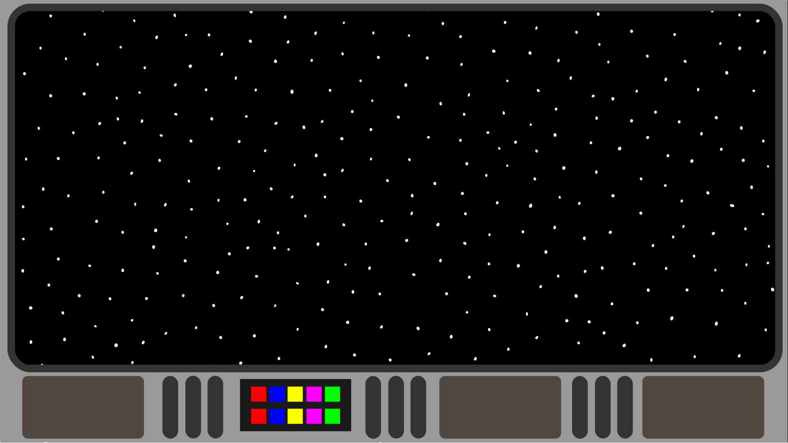

Cosmic Defender

Cosmic Defender er et spil om at beskytte sit rumskib mod farlige meteorer i det ydre rum. Du skal skyde meteorerne med din laser, inden de flyver forbi og måske rammer dit rumskib. Du må ikke skyde de flyvende tallerkner, da det i sidste ende vil føre til krig mellem menneskeheden og rumvæsenerne.